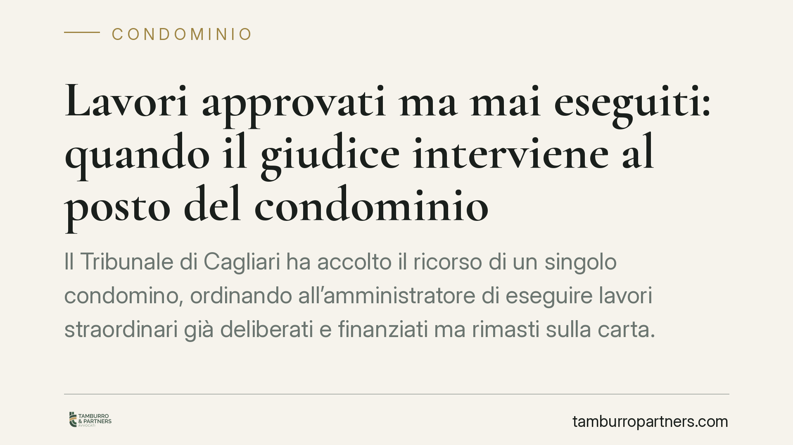

Lavori approvati ma mai eseguiti: quando il giudice interviene al posto del condominio
Il Tribunale di Cagliari ha accolto il ricorso di un singolo condomino, ordinando all'amministratore di eseguire lavori straordinari già deliberati e finanziati ma rimasti sulla carta. La decisione valorizza l'art. 1105 c.c. come strumento contro l'inerzia gestionale e ricorda che una delibera non attuata non protegge chi dovrebbe darle seguito.

Il caso
Un condomino si trova davanti a una situazione frequente: l'assemblea approva lavori straordinari, delibera la relativa provvista economica, i fondi vengono raccolti, ma i lavori non partono. Passano i mesi, l'edificio continua a degradarsi e l'amministratore resta inerte.
Il singolo condomino decide di rivolgersi al Tribunale di Cagliari, che accoglie il ricorso. Il giudice ordina all'amministratrice di procedere con urgenza all'esecuzione delle opere deliberate. Il condominio, rimasto contumace (cioè non costituitosi in giudizio), non ha fornito alcuna giustificazione per il ritardo.
La decisione è significativa perché traccia un confine netto: l'approvazione di una delibera non è il punto d'arrivo, ma il punto di partenza di un obbligo gestionale concreto.
Inquadramento normativo
Il riferimento è l'art. 1105 del Codice civile, comma 4. La norma, dettata in materia di comunione ma applicabile al condominio in virtù del rinvio dell'art. 1139 c.c., prevede che, in caso di inerzia degli amministratori o quando non si prendono i provvedimenti necessari per l'amministrazione della cosa comune, ciascun partecipante possa ricorrere all'autorità giudiziaria.
Il giudice, in questi casi, provvede in camera di consiglio e può anche nominare un amministratore. Si tratta di un intervento sostitutivo: l'autorità giudiziaria supplisce a una gestione bloccata, dando attuazione a decisioni già assunte dalla collettività condominiale.
Il presupposto non è un semplice disaccordo, ma l'inerzia: una volta che l'assemblea ha deliberato e finanziato i lavori, la mancata esecuzione senza giustificazione integra quel vuoto gestionale che legittima il ricorso. Il giudice non entra nel merito dell'opportunità dei lavori, già valutata dall'assemblea, ma garantisce che la decisione venga rispettata.
Implicazioni pratiche
Per il singolo condomino, la pronuncia conferma uno strumento spesso sottovalutato. Non è necessario attendere una nuova assemblea, né rassegnarsi all'immobilismo. Quando esiste una delibera valida, finanziata e non attuata, il ricorso ex art. 1105 c.c. consente di ottenere un ordine esecutivo in tempi relativamente rapidi.
Per l'amministratore, il messaggio è altrettanto chiaro. L'incarico comporta un dovere di dare esecuzione alle deliberazioni assembleari (art. 1130 c.c.). L'inerzia prolungata non è una zona grigia: espone a responsabilità, può giustificare la revoca giudiziale e, come in questo caso, un ordine del tribunale di procedere.
La contumacia del condominio, poi, non aiuta. Non costituirsi in giudizio significa rinunciare a spiegare le ragioni del ritardo: difficoltà tecniche, ricorsi sospensivi, problemi autorizzativi avrebbero potuto incidere sulla valutazione del giudice. In assenza di difese, l'inerzia resta priva di giustificazione.
Un punto merita attenzione. L'intervento del giudice presuppone una delibera valida ed efficace. Se la decisione è stata impugnata, sospesa o è affetta da vizi, il quadro cambia. Prima di agire conviene verificare lo stato della delibera e la provenienza dei fondi.
Cosa fare in concreto
- Verificate la delibera: accertate che sia valida, non impugnata e non sospesa, e che indichi con precisione le opere approvate e la copertura economica.
- Documentate l'inerzia: raccogliete solleciti scritti all'amministratore, verbali, rendiconti e prova dell'avvenuta raccolta dei fondi. La prova del ritardo ingiustificato è decisiva.
- Inviate una diffida formale: prima del ricorso, intimate per iscritto all'amministratore l'esecuzione dei lavori, assegnando un termine ragionevole.
- Valutate il ricorso ex art. 1105 c.c.: in caso di persistente inerzia, consigliamo di promuovere il procedimento in camera di consiglio, chiedendo l'ordine di procedere ed eventualmente la nomina di un amministratore.
- Monitorate l'esecuzione: ottenuto il provvedimento, verificate l'effettivo avvio delle opere e conservate ogni riscontro, utile in caso di ulteriore inadempimento.
Conclusioni
La decisione del Tribunale di Cagliari ribadisce un principio di buon senso tradotto in regola giuridica: le delibere condominiali vanno eseguite. Quando la gestione si blocca, l'ordinamento offre al singolo uno strumento per rimettere in moto la volontà collettiva, senza doversi arrendere all'immobilismo.
Ogni condominio ha una storia a sé.
Se gestisci un'amministrazione e vuoi un confronto su una specifica questione condominiale, scrivi allo studio. Ti rispondiamo entro un giorno lavorativo.